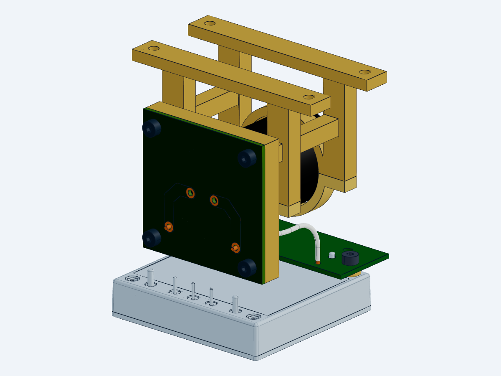

电容端接板源文件已修改并完成当前版本的局部数字装配核验。整机机电设计仍有开放项。
下载局部装配 STEP · PCB STEP · 正线 STEP · 回线 STEP

当前 CAD 快照，17 个源实例。两根导线均为白色绝缘型号；单视角存在遮挡。孔桶、焊点、公差、预紧和实物接触未资格化。
CAP 两孔改为 Ø2 PTH，保留背铜环，前面 Ø3.5 阻焊开窗已同步到分层 STEP。四颗板螺钉保持现行座面定位；WIRE 孔、六段走线、网络和规则保持。
完整工作说明 · 当前状态与源哈希 · ERC 报告 · DRC 报告 · CAM 核验
后续工作：线束固定和工具空间、CHB 局部板面、停止／回生及故障动态、整星散热、电池／PMM与推进接口。最后封装发布仍为 V18；本工作件不表示整机完成或制造放行。